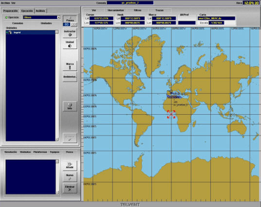

Presentación Cartográfica
La presentación cartográfica consiste en una imagen del globo terrestre con escalas graduadas de latitud y longitud sobre la que se presentan sobre impresionados diversos símbolos gráficos, tales como buques participantes en el ejercicio, estaciones costeras, satélites Inmarsat con sus zonas de cobertura o la subdivisión de NAVAREAS. Tanto la escala como la posición del centro de la presentación pueden ser seleccionadas a voluntad.

El mismo diálogo que incluye la presentación cartográfica incorpora el menú principal y un área de datos en la que se muestra información general del ejercicio y de la unidad controlada en la consola. La información mostrada incluye: